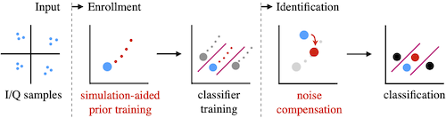
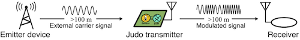
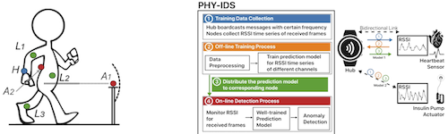

I am a dedicated young researcher focused on designing advanced, efficient and intelligent IoT communication systems that aim to enhance our society's efficiency, security, and sustainability. I always think maybe one day the technologies I contribute to will revolutionize daily human life.
My research primarily revolves around designing power-efficient and secure systems for compact embedded devices in the IoT realm. I am deeply interested in the intersection of Wireless Communication, Embedded System, Machine Learning and Security.
Currently, I am in my final year of Ph.D. study at the Uppsala University in Sweden. My Ph.D. study is under the supervision of Prof. Christian Rohner and Prof. Thiemo Voigt. Throughout my Ph.D. journey, I have had the privilege of collaborating closely with Prof. Ambuj Varshney from the National University of Singapore (NUS) and Prof. Prabal Dutta from the University of California, Berkeley. I received an M.S. degree in Information and Network Engineering from KTH Royal Institute of Technology in 2018, advised by Prof. Rolf Stadler, and I graduated with a B.Eng. degree in Communication Engineering from Beijing Jiaotong University, China, in 2016.
Curriculum Vitae: [CV] (updated Oct, 2023)
Email:[ wenqing.yan[at]it.uu.se]
Ongoing Projects: |
|
ACM HotMobile, Orange County, California, USA. Muhammad Sarmad Mir*, IMDEA* Networks Institute, Spain Wenqing Yan Prof. Domenico Giustiniano, IMDEA* Networks Institute, Spain Prof. Prabal Dutta, University of California, Berkeley Prof. Ambuj Varshney*, National University of Singapore * Co-primary authors contributed equally to the work. |
|  |
|
Teaser video Presentation video ACM WiSec2022, San Antonio, Texas, USA. Wenqing Yan, Prof. Christian Rohner, Uppsala University Prof. Thiemo Voigt, Uppsala University, RISE Research Institutes of Sweden Radiometric fingerprint schemes have been shown effective in identifying wireless devices based on imperfections in their hardware electronics. The robustness of fingerprint systems under complex channel conditions, however, is a critical challenge that makes their application in real-world scenarios difficult. We systematically evaluate the wireless channel impact on radiometric fingerprints and find that the channel impacts fingerprint features in a very particular way that depends on the channel properties. Based on these insights, we present RRF, a system that provides a robust identification/authentication service even under complex channel fading disturbance. Our design deploys a hybrid architecture that combines wireless channel simulation, signal processing and machine learning. |
|  |
|
Teaser video Presentation video ACM MobiSys2022, Portland, Oregon, USA. Wenqing Yan Prof. Ambuj Varshney*, National University of Singapore Prof. Prabal Dutta, University of California, Berkeley * Co-primary authors contributed equally to the work. The radio transmitter is the most power-consuming component of a wireless embedded system. We present JUDO, a radio transmitter that enables power balance between the wireless transmission, sensing, and processing tasks of a wireless embedded system. In this work, we revisit the radio transmitter architecture by dramatically reducing the radiated power and hence the overall power draws. Specifically, JUDO transmitters use a tunnel diode oscillator to integrate the stages of a radio transmitter into a single energy-efficient step. In this step, baseband signals are generated and mixed with peak power draws below 100 mW. However, tunnel diode oscillators sacrifice stability for low-power, which we sidestep by using injection-locking to stabilize the tunnel diode oscillator with an external carrier signal. Based on this novel architecture, we implement a transmitter that supports frequency-shift keying as a modulation scheme. JUDO transmits to a receiver over distances exceeding 100 m at a bit rate of 100 kbps. Crucially, it does so with an emitter device providing the carrier signal, also located more than 100 m from the JUDO transmitter. In terms of critical link metrics, JUDO outperforms the radio transmitters commonly used in wireless embedded systems. |
|  |
|
Presentation video ACM WearSys Workshop in conjuction with MobiSys2020, Toronto, Canada. Wenqing Yan Prof. Christian Rohner, Uppsala University Prof. Thiemo Voigt, Uppsala University, RISE Research Institutes of Sweden In modern connected healthcare applications, wearable devices supporting real-time monitoring and diagnosis have become mainstream. However, wearable systems are exposed to massive cyber-attacks that threaten not only data security but also human safety and life. One of the fundamental security threats is device imper- sonation. We therefore propose PHY-IDS; a lightweight real-time detection system that captures spoofing attacks leveraging on body motions. Our system utilizes time series of physical layer features and builds on the fact that it is non-trivial to inject malicious frames that are indistinguishable with legitimate ones. With the help of statistical learning, our system characterizes the signal behavior and flags deviations as anomalies. We experimentally evaluate PHY-IDS’s performance using bodyworn devices in real attack scenarios. For four types of attackers with increasing knowledge of the deployed detection system, the results show that PHY-IDS detects naive attackers with high accuracy above 99.8% and maintains good accuracy for stronger attackers at a range from 81.0% to 98.9%. |